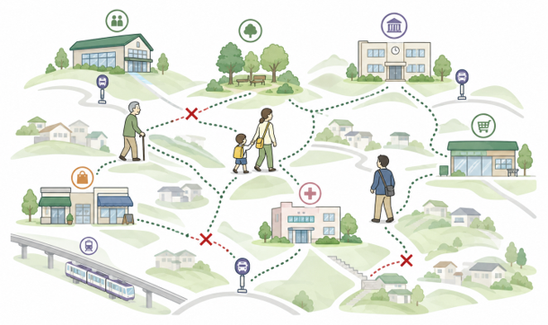

場面で書く
地域、時間帯、移動する人、目的、出発地と行き先を、順に書いてください。
西鎌倉の移動メモを集めています
通勤、通学、通院、お買い物、習い事、お出かけ。日々の小さな移動の困りごとや、あったら助かる場面を、地域のみんなで集める投稿ボードです。

たとえば
「平日朝、鎌倉山から西鎌小学校へ」
「日中、西鎌倉から腰越図書館へ」
「休日午前、駅からみんなの家へ」
地域、時間帯、移動する人、目的、出発地と行き先を、順に書いてください。
Webで公開してよい投稿も、事務局の確認後に公開されます。事務局だけに知らせたい投稿も選べます。
投稿後に届くメールの確認・変更用リンクから、自分の投稿を確認・訂正・取消できます。
投稿フォーム
すべての項目をご記入ください。公開希望の投稿も、事務局の承認後に公開されます。
投稿後の手続き
メールアドレスを入力すると、本人宛に確認・変更用リンクが届きます。そのリンクから自分の投稿を確認・訂正・取消できます。
あなたの投稿
承認後に公開された投稿
公開投稿を読み込みます。